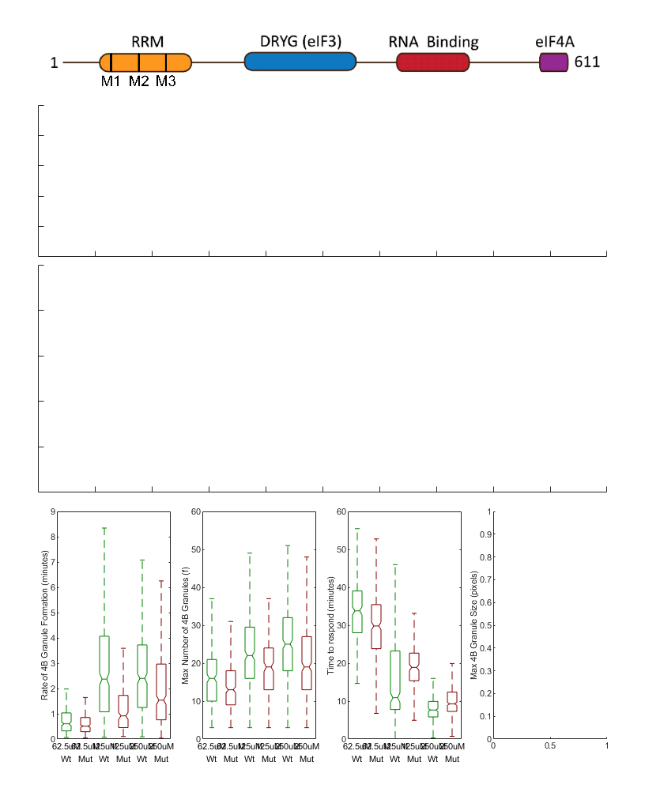

Contents
- Load the model fit data for the live cell
- 24h induced Wild-Type 4B Data
- 24h induced 139A mutant 4B data
- Make the fit models
- fit the model to the datasets
- Subset only the good data
- Run the statistics comparing the cell lines using wt treated with various concentrations of NaAsO2 as control
- Start with wt 4b cells treated with 62.5uM NaAsO2 as control vs all other NaAsO2 concentrations and btwn cell lines
- Now use wt 4b cells treated with 125uM as control vs all other NaAsO2 concentrations and btwn cell lines
- Now use wt 4b cells treated with 250uM as control vs all other NaAsO2 concentrations and btwn cell lines
- Plot the data for Figure 2
- pull from combined data figures
Load the model fit data for the live cell
addpath('Z:\code\Nick')
24h induced Wild-Type 4B Data
% 2023-05-03 dataset1 = load('Z:\imageData\SG_4B\2023-05-03 4B-WT 4B-Mut Tet curve NaAsO2 curve\2023-05-03 4B-WT 4B-Mut Tet curve NaAsO2 curve_Processed_Copy.mat'); dataset1 = dataset1.dataloc; % pull the loaded dataloc structure % 2023-06-15 dataset2 = load('Z:\imageData\SG_4B\2023-06-15 4b WT-Mut NaAso2 Curve\2023-06-15 4b WT-Mut NaAso2 Curve_Processed_Copy.mat'); dataset2 = dataset2.dataloc; % pull the loaded dataloc structure % 2023-06-29 dataset3 = load('Z:\imageData\SG_4B\2023-06-29 4B WT vs Mut TET curve NaAsO2 curve\2023-06-29 4B WT vs Mut TET curve NaAsO2 curve_Processed_Copy.mat'); dataset3 = dataset3.dataloc; % pull the loaded dataloc structure % 2023-08-23 %dataset4 = load(''); %dataset4 = dataset5.dataloc; % pull the loaded dataloc structure
24h induced 139A mutant 4B data
% 2023-05-03 (already loaded) % 2023-06-15 (already loaded) % 2023-06-29 (already loaded) % 2023-08-23 (already loaded)
Make the fit models
datalocDF = makeLiveCellDataframe({dataset1,dataset2,dataset3},'subset','TET100n24t_NaAsO2125u2t');
plotme = {'NumGrans'}; %,'granspercell' plottype = {'albeck mean fit fixed f'}; % 'albeck mean fit'
plot_by_ND_forJB('treatment', datalocDF,'plottype',plottype,'channel',plotme,'looptime',3,'font_size',8)
fit the model to the datasets
[fitData2,~] = convertDatalocToModelFit({dataset1,dataset2,dataset3}, 'NumGrans');
Subset only the good data
fitData = fitData2; % work with duplicated data (for safety) gFitData = fitData((fitData.NumGrans_rsquared > 0.8),:); % look for an r squared greater than 0.8 ? % Max number of grans FROM MODEL (f) versus treatment and cell line minGrans = 3; tetTime = '-24'; naAsO2 = ("62.5"|"125"|"250"); subz = all([contains(gFitData.treatment,['TET at hour ', tetTime]),contains(gFitData.treatment,naAsO2),... (gFitData.NumGrans_f >= minGrans)],2); % filter for the parameters set above % subset the data subData = gFitData(subz,:); % simplify the name since all the data is 24hr tet induced, NaAsO2 is at hour 0, and we know HeLa_eIF4BGFP is wt/HeLa_4B139AGFP is mut subData.treatment = strrep(subData.treatment,'0.1ug/mL TET at hour -24 and ',''); subData.treatment = strrep(subData.treatment,' NaAsO2 at hour 0',''); subData.cell = strrep(subData.cell,'HeLa_4B139AGFP','Mut'); subData.cell = strrep(subData.cell,'HeLa_eIF4BGFP','Wt');
Run the statistics comparing the cell lines using wt treated with various concentrations of NaAsO2 as control
% get averything for the reader if needed grpstats(subData,["treatment","cell"],["mean","median","sem","std"],"DataVars",["NumGrans_rate_in_min","NumGrans_f","NumGrans_min_to_respond"]) % Now just print the means grpstats(subData,["treatment","cell"],"mean","DataVars",["NumGrans_rate_in_min","NumGrans_f","NumGrans_min_to_respond"])
ans =
6×15 table
treatment cell GroupCount mean_NumGrans_rate_in_min median_NumGrans_rate_in_min sem_NumGrans_rate_in_min std_NumGrans_rate_in_min mean_NumGrans_f median_NumGrans_f sem_NumGrans_f std_NumGrans_f mean_NumGrans_min_to_respond median_NumGrans_min_to_respond sem_NumGrans_min_to_respond std_NumGrans_min_to_respond
_________ _____ __________ _________________________ ___________________________ ________________________ ________________________ _______________ _________________ ______________ ______________ ____________________________ ______________________________ ___________________________ ___________________________
62.5uM_Wt "62.5uM" "Wt" 269 0.80903 0.60375 0.047201 0.77415 15.918 16 0.44071 7.2282 35.209 33.799 0.68327 11.206
62.5uM_Mut "62.5uM" "Mut" 349 0.71559 0.5115 0.040208 0.75115 14.109 13 0.34915 6.5227 30.918 29.824 0.62697 11.713
125uM_Wt "125uM" "Wt" 364 3.0921 2.37 0.17392 3.3183 23.192 22 0.53419 10.192 15.547 10.899 0.49423 9.4292
125uM_Mut "125uM" "Mut" 215 1.2124 0.91663 0.06691 0.9811 18.823 19 0.58651 8.6 20.477 18.887 0.70779 10.378
250uM_Wt "250uM" "Wt" 390 3.2587 2.3978 0.19987 3.9472 24.762 25 0.56643 11.186 9.2159 7.6485 0.46843 9.2508
250uM_Mut "250uM" "Mut" 399 2.3654 1.5378 0.1517 3.0302 20.028 19 0.4762 9.5121 11.012 9.2855 0.40975 8.1848
ans =
6×6 table
treatment cell GroupCount mean_NumGrans_rate_in_min mean_NumGrans_f mean_NumGrans_min_to_respond
_________ _____ __________ _________________________ _______________ ____________________________
62.5uM_Wt "62.5uM" "Wt" 269 0.80903 15.918 35.209
62.5uM_Mut "62.5uM" "Mut" 349 0.71559 14.109 30.918
125uM_Wt "125uM" "Wt" 364 3.0921 23.192 15.547
125uM_Mut "125uM" "Mut" 215 1.2124 18.823 20.477
250uM_Wt "250uM" "Wt" 390 3.2587 24.762 9.2159
250uM_Mut "250uM" "Mut" 399 2.3654 20.028 11.012
Start with wt 4b cells treated with 62.5uM NaAsO2 as control vs all other NaAsO2 concentrations and btwn cell lines
Test if Rate is significantly different btwn the 4B cell lines
[~,~,statsR] = anova1(subData.NumGrans_rate_in_min,strcat(subData.treatment,{' '},subData.cell),'off');
[resultsRate,~,~,gnamesRate] = multcompare(statsR,"CriticalValueType","dunnett",'ControlGroup',find(matches(statsR.gnames,'62.5uM Wt')),'Display','off','Approximate',false);
RateOfGranuleFormation = array2table(resultsRate,"VariableNames", ["Group","Control Group","Lower Limit","Difference","Upper Limit","P-value"]);
RateOfGranuleFormation.("Group") = gnamesRate(RateOfGranuleFormation.("Group"));
RateOfGranuleFormation.("Control Group") = gnamesRate(RateOfGranuleFormation.("Control Group"))
% Test if number (f) is significantly different btwn the 4B cell lines
[~,~,statsF] = anova1(subData.NumGrans_f,strcat(subData.treatment,{' '},subData.cell),'off');
[resultsMaxG,~,~,gnamesF] = multcompare(statsF,"CriticalValueType","dunnett",'ControlGroup',find(matches(statsF.gnames,'62.5uM Wt')),'Display','off','Approximate',false);
MaxGranulesFormed = array2table(resultsMaxG,"VariableNames", ["Group","Control Group","Lower Limit","Difference","Upper Limit","P-value"]);
MaxGranulesFormed.("Group") = gnamesF(MaxGranulesFormed.("Group"));
MaxGranulesFormed.("Control Group") = gnamesF(MaxGranulesFormed.("Control Group"))
% Test if time to respond is significantly different btwn the 4B cell lines
[~,~,statsT2R] = anova1(subData.NumGrans_min_to_respond,strcat(subData.treatment,{' '},subData.cell),'off');
[resultsTime2Resp,~,~,gnamesT2R] = multcompare(statsT2R,"CriticalValueType","dunnett",'ControlGroup',find(matches(statsT2R.gnames,'62.5uM Wt')),'Display','off','Approximate',false);
Time2Respond = array2table(resultsTime2Resp,"VariableNames", ["Group","Control Group","Lower Limit","Difference","Upper Limit","P-value"]);
Time2Respond.("Group") = gnamesT2R(Time2Respond.("Group"));
Time2Respond.("Control Group") = gnamesT2R(Time2Respond.("Control Group"))
RateOfGranuleFormation =
5×6 table
Group Control Group Lower Limit Difference Upper Limit P-value
______________ _____________ ___________ __________ ___________ __________
{'62.5uM Mut'} {'62.5uM Wt'} -0.63753 -0.093448 0.45064 0.98991
{'125uM Wt' } {'62.5uM Wt'} 1.7439 2.2831 2.8223 0
{'125uM Mut' } {'62.5uM Wt'} -0.21007 0.4034 1.0169 0.31792
{'250uM Wt' } {'62.5uM Wt'} 1.9181 2.4496 2.9811 0
{'250uM Mut' } {'62.5uM Wt'} 1.0273 1.5564 2.0854 9.7311e-13
MaxGranulesFormed =
5×6 table
Group Control Group Lower Limit Difference Upper Limit P-value
______________ _____________ ___________ __________ ___________ __________
{'62.5uM Mut'} {'62.5uM Wt'} -3.6704 -1.8093 0.051738 0.059755
{'125uM Wt' } {'62.5uM Wt'} 5.4298 7.2741 9.1184 0
{'125uM Mut' } {'62.5uM Wt'} 0.80666 2.905 5.0034 0.0025455
{'250uM Wt' } {'62.5uM Wt'} 7.0253 8.8433 10.661 0
{'250uM Mut' } {'62.5uM Wt'} 2.2998 4.1094 5.919 8.0688e-08
Time2Respond =
5×6 table
Group Control Group Lower Limit Difference Upper Limit P-value
______________ _____________ ___________ __________ ___________ __________
{'62.5uM Mut'} {'62.5uM Wt'} -6.311 -4.2914 -2.2718 6.2737e-07
{'125uM Wt' } {'62.5uM Wt'} -21.664 -19.662 -17.661 0
{'125uM Mut' } {'62.5uM Wt'} -17.01 -14.733 -12.455 0
{'250uM Wt' } {'62.5uM Wt'} -27.966 -25.993 -24.02 0
{'250uM Mut' } {'62.5uM Wt'} -26.161 -24.197 -22.233 0
Now use wt 4b cells treated with 125uM as control vs all other NaAsO2 concentrations and btwn cell lines
Test if Rate is significantly different btwn the 4B cell lines
[~,~,statsR] = anova1(subData.NumGrans_rate_in_min,strcat(subData.treatment,{' '},subData.cell),'off');
[resultsRate,~,~,gnamesRate] = multcompare(statsR,"CriticalValueType","dunnett",'ControlGroup',find(matches(statsR.gnames,'125uM Wt')),'Display','off','Approximate',false);
RateOfGranuleFormation = array2table(resultsRate,"VariableNames", ["Group","Control Group","Lower Limit","Difference","Upper Limit","P-value"]);
RateOfGranuleFormation.("Group") = gnamesRate(RateOfGranuleFormation.("Group"));
RateOfGranuleFormation.("Control Group") = gnamesRate(RateOfGranuleFormation.("Control Group"))
% Test if number (f) is significantly different btwn the 4B cell lines
[~,~,statsF] = anova1(subData.NumGrans_f,strcat(subData.treatment,{' '},subData.cell),'off');
[resultsMaxG,~,~,gnamesF] = multcompare(statsF,"CriticalValueType","dunnett",'ControlGroup',find(matches(statsF.gnames,'125uM Wt')),'Display','off','Approximate',false);
MaxGranulesFormed = array2table(resultsMaxG,"VariableNames", ["Group","Control Group","Lower Limit","Difference","Upper Limit","P-value"]);
MaxGranulesFormed.("Group") = gnamesF(MaxGranulesFormed.("Group"));
MaxGranulesFormed.("Control Group") = gnamesF(MaxGranulesFormed.("Control Group"))
% Test if time to respond is significantly different btwn the 4B cell lines
[~,~,statsT2R] = anova1(subData.NumGrans_min_to_respond,strcat(subData.treatment,{' '},subData.cell),'off');
[resultsTime2Resp,~,~,gnamesT2R] = multcompare(statsT2R,"CriticalValueType","dunnett",'ControlGroup',find(matches(statsT2R.gnames,'125uM Wt')),'Display','off','Approximate',false);
Time2Respond = array2table(resultsTime2Resp,"VariableNames", ["Group","Control Group","Lower Limit","Difference","Upper Limit","P-value"]);
Time2Respond.("Group") = gnamesT2R(Time2Respond.("Group"));
Time2Respond.("Control Group") = gnamesT2R(Time2Respond.("Control Group"))
RateOfGranuleFormation =
5×6 table
Group Control Group Lower Limit Difference Upper Limit P-value
______________ _____________ ___________ __________ ___________ __________
{'62.5uM Wt' } {'125uM Wt'} -2.8277 -2.2831 -1.7385 0
{'62.5uM Mut'} {'125uM Wt'} -2.884 -2.3765 -1.8691 0
{'125uM Mut' } {'125uM Wt'} -2.4623 -1.8797 -1.2971 1.6653e-15
{'250uM Wt' } {'125uM Wt'} -0.32708 0.16654 0.66016 0.87272
{'250uM Mut' } {'125uM Wt'} -1.2176 -0.72671 -0.23578 0.00092108
MaxGranulesFormed =
5×6 table
Group Control Group Lower Limit Difference Upper Limit P-value
______________ _____________ ___________ __________ ___________ __________
{'62.5uM Wt' } {'125uM Wt'} -9.1369 -7.2741 -5.4113 0
{'62.5uM Mut'} {'125uM Wt'} -10.819 -9.0834 -7.3478 0
{'125uM Mut' } {'125uM Wt'} -6.3618 -4.3691 -2.3763 1.4532e-07
{'250uM Wt' } {'125uM Wt'} -0.11921 1.5692 3.2577 0.078945
{'250uM Mut' } {'125uM Wt'} -4.844 -3.1647 -1.4855 9.8318e-06
Time2Respond =
5×6 table
Group Control Group Lower Limit Difference Upper Limit P-value
______________ _____________ ___________ __________ ___________ __________
{'62.5uM Wt' } {'125uM Wt'} 17.641 19.662 21.684 0
{'62.5uM Mut'} {'125uM Wt'} 13.487 15.371 17.254 0
{'125uM Mut' } {'125uM Wt'} 2.7672 4.9297 7.0922 3.4574e-08
{'250uM Wt' } {'125uM Wt'} -8.1633 -6.3311 -4.4988 0
{'250uM Mut' } {'125uM Wt'} -6.3569 -4.5347 -2.7124 1.3358e-09
Now use wt 4b cells treated with 250uM as control vs all other NaAsO2 concentrations and btwn cell lines
Test if Rate is significantly different btwn the 4B cell lines
[~,~,statsR] = anova1(subData.NumGrans_rate_in_min,strcat(subData.treatment,{' '},subData.cell),'off');
[resultsRate,~,~,gnamesRate] = multcompare(statsR,"CriticalValueType","dunnett",'ControlGroup',find(matches(statsR.gnames,'250uM Wt')),'Display','off','Approximate',false);
RateOfGranuleFormation = array2table(resultsRate,"VariableNames", ["Group","Control Group","Lower Limit","Difference","Upper Limit","P-value"]);
RateOfGranuleFormation.("Group") = gnamesRate(RateOfGranuleFormation.("Group"));
RateOfGranuleFormation.("Control Group") = gnamesRate(RateOfGranuleFormation.("Control Group"))
% Test if number (f) is significantly different btwn the 4B cell lines
[~,~,statsF] = anova1(subData.NumGrans_f,strcat(subData.treatment,{' '},subData.cell),'off');
[resultsMaxG,~,~,gnamesF] = multcompare(statsF,"CriticalValueType","dunnett",'ControlGroup',find(matches(statsF.gnames,'250uM Wt')),'Display','off','Approximate',false);
MaxGranulesFormed = array2table(resultsMaxG,"VariableNames", ["Group","Control Group","Lower Limit","Difference","Upper Limit","P-value"]);
MaxGranulesFormed.("Group") = gnamesF(MaxGranulesFormed.("Group"));
MaxGranulesFormed.("Control Group") = gnamesF(MaxGranulesFormed.("Control Group"))
% Test if time to respond is significantly different btwn the 4B cell lines
[~,~,statsT2R] = anova1(subData.NumGrans_min_to_respond,strcat(subData.treatment,{' '},subData.cell),'off');
[resultsTime2Resp,~,~,gnamesT2R] = multcompare(statsT2R,"CriticalValueType","dunnett",'ControlGroup',find(matches(statsT2R.gnames,'250uM Wt')),'Display','off','Approximate',false);
Time2Respond = array2table(resultsTime2Resp,"VariableNames", ["Group","Control Group","Lower Limit","Difference","Upper Limit","P-value"]);
Time2Respond.("Group") = gnamesT2R(Time2Respond.("Group"));
Time2Respond.("Control Group") = gnamesT2R(Time2Respond.("Control Group"))
RateOfGranuleFormation =
5×6 table
Group Control Group Lower Limit Difference Upper Limit P-value
______________ _____________ ___________ __________ ___________ __________
{'62.5uM Wt' } {'250uM Wt'} -2.9874 -2.4496 -1.9119 0
{'62.5uM Mut'} {'250uM Wt'} -3.043 -2.5431 -2.0432 0
{'125uM Wt' } {'250uM Wt'} -0.661 -0.16654 0.32791 0.87713
{'125uM Mut' } {'250uM Wt'} -2.6225 -2.0462 -1.4699 0
{'250uM Mut' } {'250uM Wt'} -1.3764 -0.89325 -0.41014 1.6138e-05
MaxGranulesFormed =
5×6 table
Group Control Group Lower Limit Difference Upper Limit P-value
______________ _____________ ___________ __________ ___________ __________
{'62.5uM Wt' } {'250uM Wt'} -10.683 -8.8433 -7.0038 0
{'62.5uM Mut'} {'250uM Wt'} -12.363 -10.653 -8.9425 0
{'125uM Wt' } {'250uM Wt'} -3.2607 -1.5692 0.12226 0.079957
{'125uM Mut' } {'250uM Wt'} -7.9098 -5.9383 -3.9668 1.4244e-13
{'250uM Mut' } {'250uM Wt'} -6.3866 -4.734 -3.0813 2.8044e-12
Time2Respond =
5×6 table
Group Control Group Lower Limit Difference Upper Limit P-value
______________ _____________ ___________ __________ ___________ _______
{'62.5uM Wt' } {'250uM Wt'} 23.997 25.993 27.99 0
{'62.5uM Mut'} {'250uM Wt'} 19.846 21.702 23.558 0
{'125uM Wt' } {'250uM Wt'} 4.4955 6.3311 8.1666 0
{'125uM Mut' } {'250uM Wt'} 9.1213 11.261 13.4 0
{'250uM Mut' } {'250uM Wt'} 0.0029497 1.7964 3.5898 0.04948
Plot the data for Figure 2
% make a new figure figure2 = figure; set(figure2,'Units',"Inches",'Position',[0,0,8.5,11],'PaperPosition',[0,0,8.5,11]); ax=[]; clear ax; % Figure 2A (4B mutant diagram) - make an axis handle for everything and make the first blank space for 4B mutation diagram ax(1) = subplot(4,4,[1,4]); set(ax(1),'Units','Inches','Position',[0.5, 9.2, 7.5, 1]) xticklabels({''}); yticklabels({''}); % Figure 2B - Images of 4B mutant images - [Nuclei, 4B mutant GFP, G3BP1, merged] ax(2) = subplot(4,4,[5,8]); set(ax(2),'Units','Inches','Position',[0.5, 7.1, 7.5, 2]) xticklabels({''}); yticklabels({''}); % Figure 2C - ??? ax(3) = subplot(4,4,[9,12]); set(ax(3),'Units','Inches','Position',[0.5, 4, 7.5, 3]) xticklabels({''}); yticklabels({''}); % Figure 4D - plot all rate, f, time 2 respond, and max granule area as box and wisker plots % set the wt vs mutant colors clrz = [0, 0.5, 0; ... 0.5, 0, 0]; % plot the rate ax(4) = subplot(4,4,13); boxplot(subData.NumGrans_rate_in_min,{subData.treatment,subData.cell},'Symbol','','Notch','on','colorgroup',subData.cell,'Colors',clrz); % ylim([0,9]) ylabel('Rate of 4B Granule Formation (minutes)') % plot the max granules ax(5) = subplot(4,4,14); boxplot(subData.NumGrans_f,{subData.treatment,subData.cell},'Notch','on','Symbol','','colorgroup',subData.cell,'Colors',clrz); ylim([0,60]) ylabel('Max Number of 4B Granules (f)') % plot the time 2 respond ax(6) = subplot(4,4,15); boxplot(subData.NumGrans_min_to_respond,{subData.treatment,subData.cell},'Notch','on','Symbol','','colorgroup',subData.cell,'Colors',clrz); ylim([0,60]) ylabel('Time to respond (minutes)') % plot the average granule area at max f ax(7) = subplot(4,4,16); % boxplot(gFitData.NumGrans_f,gFitData.cell,'Notch','on','colorgroup',subData.cell,'Colors',clrz); % ylim([,]) ylabel('Max 4B Granule Size (pixels)') % loop through the subplots that make up figure 2D, size and space them appropriately pWidth = 1.5; % plot width in inches pHeight = 3; % plot height in inches sWidth = (7.25-(pWidth*4))/3; % gap btwn plots in inches for iSub = 4:7 set(ax(iSub),'Units','Inches','Position',[0.75+(pWidth*(iSub-4))+(sWidth*(iSub-4)), 0.75, pWidth, pHeight]) end fontsize(8,"points"); fontname("Arial"); saveas(figure2,'Z:\imageData\SG_4B\Paper_Figures\Output_Figures\Figure_2.fig') saveas(figure2,'Z:\imageData\SG_4B\Paper_Figures\Output_Figures\Figure_2.svg')
pull from combined data figures
Test if average size is significantly different btwn the 4B cell lines [~,~,stats] = anova1(subData.NumGrans_f,subData.cell,'off'); [resultsTime2Resp,~,~,gnamesT2R] = multcompare(stats,"CriticalValueType","dunnett",'ControlGroup',find(matches(stats.gnames,'HeLa_eIF4BGFP')),'Display','off'); Time2Respond = array2table(resultsTime2Resp,"VariableNames", ["Group","Control Group","Lower Limit","Difference","Upper Limit","P-value"]); Time2Respond.("Group") = gnamesT2R(Time2Respond.("Group")); Time2Respond.("Control Group") = gnamesT2R(Time2Respond.("Control Group"))
% title([tetTime,'h WT4b Tet induced and all NaAsO2 Doses']) % % subz = all([contains(gFitData.treatment,['TET at hour ', tetTime]),contains(gFitData.cell,'139A'),... % (gFitData.NumGrans_f >= minGrans)],2); % figure; % boxplot(gFitData.NumGrans_f(subz),gFitData.treatment(subz)); % xlabel('treatment'); ylabel('f (Number of 4B Granules)') % ylim(ylimz) % title([tetTime,'h 139A mut Tet induced and all NaAsO2 Doses'])